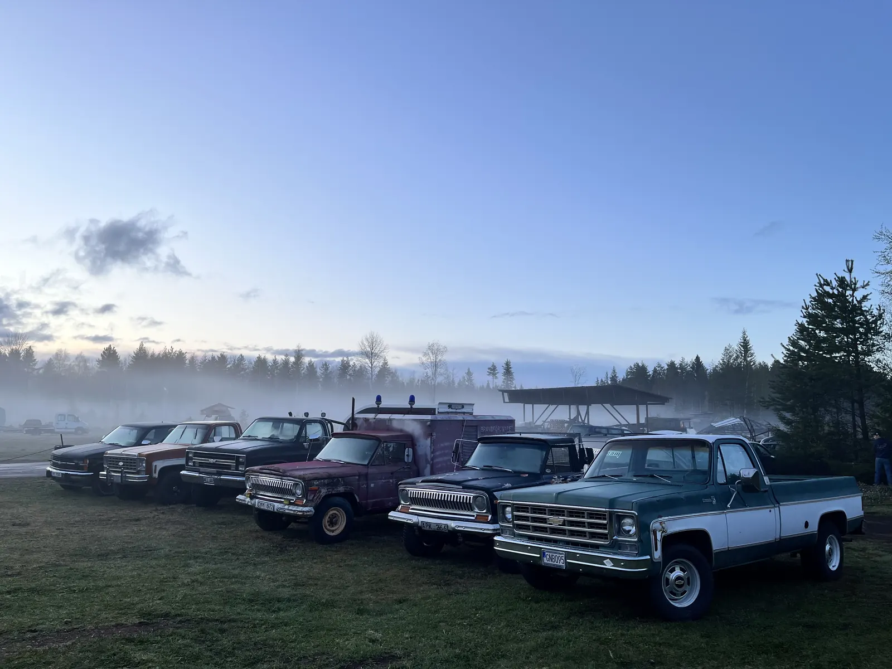

Hitta hit
Backwoods håller till på Rotsågen, ett nedlagt sågverk i Rot strax utanför Älvdalen.
- Adress
-
Rotsågen, Rot, Älvdalen
GPS: 61.26196, 14.03700 - Med bil
Älvdalen ligger längs riksväg 70, norr om Mora. Därifrån är det en kort bit till Rot. Knappen ovan öppnar vägbeskrivningen i Google Maps och tar dig hela vägen fram.
- Parkering
Parkering finns vid festivalområdet.
- Camping
Info om camping 2027 kommer här så snart den är klar.
Kartan kommer från Google Maps och laddas först när du klickar.